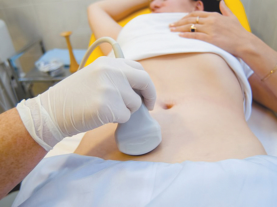

Μια ασθένεια που εμφανίζεται πάντα, όταν δεν την περιμένεις - είναι η κυστίτιδα. Πώς και με τι να την θεραπεύσουμε;
14.07.2020
Η συχνότητα της κυστίτιδας μεταξύ των ατόμων ηλικίας 20-70 ετών είναι εξαιρετικά υψηλός στο πλαίσιο ενός ποσοστού θεραπείας που δεν υπερβαίνει το 20%. Γιατί η ασθένεια είναι τόσο δύσκολη στην θεραπεία της και πώς να την θεραπεύσουμε πλήρως, θα πει ο γιατρός των ιατρικών επιστημών, ο καθηγητής Κωνσταντίνος Μόραλης.

- Γιατρέ Μοράλη, γεια σας! Πείτε μας, παρακαλώ, τι είναι η κυστίτιδα και ποιος είναι στην ζώνη κινδύνου;
- Γεια σας! Η κυστίτιδα - είναι μια φλεγμονώδης νόσος της βλεννογόνου της ουροδόχου κύστης, είναι διαδεδομένη στις γυναίκες. Σε άνδρες και παιδιά, η φλεγμονή εμφανίζεται πολύ λιγότερο συχνά, εκδηλώνεται πιο λίγο. Συνοδεύεται από τρομερή δυσφορία μέχρι την απώλεια ικανότητας κατά τη περίοδο μιας επιδείνωσης.
- Είναι όλα τόσο σοβαρά;
- Αυτή είναι μια ύπουλη ασθένεια. Εννέα στους δέκα ασθενείς έρχονται σε μένα μόνο τότε όταν δεν μπορούν να την αντιμετωπίσουν μόνοι τους. Ως γιατρός, ενώ τους μαλώνω, ως άτομο - μπορώ να τους καταλάβω. Η κατάσταση είναι πολύ προσωπική, δυσάρεστη, όλοι θέλουν να την ξεφορτωθούν το συντομότερο δυνατό. Σε τέτοιες περιπτώσεις, ο εγκέφαλος λειτουργεί μόνο για την επιβίωση.
Ποια είναι η πρώτη σκέψη ενός ατόμου με οξύ πόνο; Μειώστε τον πόνο. Και μπορείτε να το μειώσετε μόνο με χάπια. Έτσι τρέχει μπροστά από τα ένστικτα του στο φαρμακείο για αντιβιοτικά.
- Τα αντιβιοτικά είναι αναποτελεσματικά;
- Λοιπόν, δεν είναι ακριβώς έτσι. Πραγματικά αυτά εξαλείφουν τον πόνο. Φαίνεται, ότι η ασθένεια έχει περάσει πλήρως. Αλλά δεν έχει πάει πουθενά. Ένας ή δύο μήνες και θα εμφανιστεί μια νέα επιδείνωση. Και εκεί δεν είναι και πολύ μακριά από την χρόνια κατάσταση. Τα αντιβιοτικά πρέπει να επιλέγονται βάσει των εργαστηριακών εξετάσεων.
Αρχικά, πρέπει να εντοπίστε το παθογόνο και, στη συνέχεια, να το αφαιρέστε με βαρύ πυροβολικό. Εάν τα κάνετε λήψη χαοτικά, το αποτέλεσμα θα είναι εφάπαξ και μετά θα είναι εντελώς αντίθετο.

- Ποιες αιτίες και συμπτώματα κυστίτιδας μπορείτε να επισημάνετε;
- Η ασθένεια μπορεί να προκληθεί από διάφορες αιτίες μολυσματικού και μη μολυσματικού χαρακτήρα. Ανεξάρτητα από αυτά, τα συμπτώματα είναι πάντα τα ίδια:
- αίσθημα καύσου στον κόλπο, οξύς πόνος και οι πόνοι,
- συχνή ώθηση για ούρηση,
- η μικρή ποσότητα των ούρων,
- θολά ή έντονο-κίτρινο χρώμα ούρων, με πρόσμιξη αίματος και χωρίς αυτήν,
- μεγάλη αδιαθεσία, ελαφρά αύξηση της θερμοκρασίας του σώματος, αδυναμία.
Οι πιο συχνές αιτίες της κυστίτιδας είναι:
- τραυματισμός κατά τη διάρκεια του σεξ,
- η εξασθενημένη ανοσία,
- η διείσδυση βακτηρίων μέσω της ουρήθρας στην ουροδόχο κύστη,
- οι εστίες χρόνιας λοίμωξης μέσα στον οργανισμό,
- περασμένες γυναικολογικές, αφροδισιακές ασθένειες,
- η υποθερμία των πυελικών οργάνων,
- τραυματική επίδραση,
- ορμονικές διαταραχές στον οργανισμό,
- τα χαρακτηριστικά της ανατομικής δομής των ουροποιητικών καναλιών.
- Ποιος είναι ο κίνδυνος κυστίτιδας και λανθασμένης θεραπείας;
- Με οποιοδήποτε τρόπο κι αν αποκτήσετε κυστίτιδα για πρώτη φορά, η περαιτέρω ποιότητα ζωής εξαρτάται από τις αμυντικές δυνάμεις του οργανισμού σας. Εάν έχετε ήδη υποβληθεί σε θεραπεία με αντιβιοτικά (και αυτός είναι ο πιο συχνός και αναποτελεσματικός τρόπος στο μέλλον), τότε ο οργανισμός σας κινδυνεύει.
Με την πάροδο του χρόνου, τα βακτήρια αναπτύσσουν αντοχή στα αντιβιοτικά, μεταλλάσσονται και αποκτούν ανοσία. Γίνεται πιο δύσκολο να θεραπευτεί η κυστίτιδα, η ασθένεια παίρνει μια χρόνια μορφή. Αυτό σημαίνει, ότι παραμένετε άρρωστη, μολυσμένη, ακόμα κι αν δεν συνοδεύονται από σοβαρά συμπτώματα κυστίτιδας.
Οι συνέπειες της κυστίτιδας περιλαμβάνουν: ακράτεια ούρων, πυελονεφρίτιδα, αποστήματα των νεφρών, νεφρική ανεπάρκεια και η υπογονιμότητα.
- Και όμως, μπορεί να θεραπευτεί η κυστίτιδα;
- Ναι μπορεί. Με αντιβιοτικά - μόνο μετά από πλήρη εξέταση και υπό τον πλήρη έλεγχο του θεράποντος ιατρού, στον οποίον εμπιστεύεστε. Τα φυτικά παρασκευάσματα είναι καλά για την πρόληψη των ουρογεννητικών παθήσεων, την εξάλειψη της χρόνιας κυστίτιδας και, φυσικά, την πρόληψη της οξείας.
- Μπορείτε να συστήσετε κάποια μεμονωμένα φάρμακα;
- Ίσως, με καθαρή συνείδηση, μπορώ να προτείνω μόνο το . Ένα φυτικό σκεύασμα με πλούσια σύνθεση από τα λεγόμενα φυσικά αντιβιοτικά. Αυτά, σε αντίθεση με τα συνθετικά, δεν φέρνουν βλάβη στον οργανισμό. Όσον αφορά την αποτελεσματικότητα, δεν είναι καθόλου κατώτερα από τα συνηθισμένα φάρμακα.

Ίσως αυτό είναι το μοναδικό σκεύασμα, το οποίο μπορεί να ληφθεί χωρίς ιατρική συνταγή - όσο στα πρώτα συμπτώματα της κυστίτιδας, τόσο και σε προχωρημένες περιπτώσεις. Άλλωστε, η τιμή του είναι λογική.
- Επιτρέπετε την αυτοθεραπεία της ασθένειας;
- Κοιτάξτε, οι άνθρωποι προσπαθούν έτσι και αλλιώς να την θεραπεύσουν μόνοι τους. Δόξα τω Θεώ, τώρα υπάρχει , το οποίο δεν βλάπτει τον οργανισμό, όσο και κάθε φαρμακευτικό σκεύασμα. Περιέχουν μια τέτοια δόση αντιβίωσης, που ένα άλογο μπορεί να σκοτώσει.
Και μέσα στο δεν υπάρχει. Έχει φυτική βάση. Το αποτέλεσμα είναι το ίδιο, όπως και με την επίβλεψη του γιατρού, οι παρενέργειες - είναι μηδενικές. Δηλαδή, βεβαίως, παραδέχομαι και μάλιστα επιμένω, ότι τα άτομα πρέπει να κάνουν θεραπεία στο σπίτι, αλλά για χάρη Θεού, να θεραπεύστε με ασφαλή φάρμακα.
- Ευχαριστώ για τη συνομιλία, γιατρέ Μοράλη!
Για όλους που θέλουν έως και 14.07. 2020 το είναι διαθέσιμο με έκπτωση 50%. Μπορείτε να το παραγγείλετε στην παρακάτω φόρμα
Πώς εγκαίρως βρήκα το άρθρο σας. Ευχαριστώ πολύ! Παρέγγειλα , πραγματικά περιμένω πολύ.
Είχα όχι οξεία μορφή κυστίτιδας. Δεν υπήρξαν πόνοι και οξείοι πόνοι, ωστόσο, μετά την ούρηση, υπήρχε πάντα μια δυσφορία. Ο γιατρός συμβούλεψε το . Είναι ένα υπέροχο σκεύασμα, με βοήθησε πολύ γρήγορα.
Η αδερφή μου σπουδάζει σε ιατρική σχολή, μου έλεγε, ότι η κυστίτιδα μπορεί να προκαλέσει πολύ σοβαρές συνέπειες.
Το πιο τρομερό είναι, ότι η κυστίτιδα πολύ γρηγορά περνάει σε μια χρόνια μορφή. Το ξέρω από τον εαυτό μου. Θα δοκιμάσω το . Ευχαριστώ για το άρθρο!
Δεν μπορώ να φανταστώ, πώς μπορείτε να πάτε στον γιατρό, όταν δεν μπορείτε να φτάσετε από το μπάνιο στην τουαλέτα κατά τη διάρκεια μιας παρόξυνσης. Το έγινε η σωτηρία μου!!!
Δυστυχώς, και εγώ δεν μπορούσα να φτάσω στο γιατρό για πολύ καιρό. Η επόμενη επίσκεψη θα ήταν σε μια εβδομάδα, εγώ απλά θα πέθαινα από τον πόνο.
Για πρώτη φορά αντιμετωπίστηκα με την κυστίτιδα στην ηλικία των 30 χρονών. Άρχισα να αισθάνομαι οξύ πόνο κατά την ούρηση, καθώς και τον πόνο κατά τη διάρκεια του σεξ. Πήγα αμέσως στο γιατρό. Αυτός μου συντογράφησε το . Το σκεύασμα με βοήθησε πάρα πολύ, γρήγορα εξάλειψε όλα τα συμπτώματα. Συνιστώ!
Όσο μεγαλώνω, τόσο πιο τρομακτικά γίνεται να ζήσω...
Η υγεία πρέπει να παρακολουθείται από τα νεανικά χρονιά, ώστε αργότερα να μην προκύψουν τέτοια προβλήματα.
Η κυστίτιδα - είναι η κατάρα μου! Έχω υποφέρει μαζί της για ολόκληρα 7 χρόνια. Πριν από την εγκυμοσύνη, ήταν απλώς ένας εφιάλτης, και τι δεν το έκανα, και η κύστη είχα πλυθεί και ζεσταθεί, και δεν έπινα και έκανα ενέσεις. Κατά τη διάρκεια της εγκυμοσύνης όλα εξαφανίστηκαν και μετά και πάλι μια υποτροπή. Τρομεροί πόνοι, οξύς πόνος και όλα αυτά με έναν νεογέννητο γιο στην αγκαλιά μου. Έμαθα για το από την μια φίλη μου, αυτό το σκεύασμα ήταν η τελευταία μου ελπίδα. Και η ελπίδα δεν ήταν μάταια. Μετά από λίγο όταν άρχισα την λήψη του, τα συμπτώματα ανακουφίστηκαν και στη συνέχεια εξαφανίστηκαν εντελώς. Το - είναι ένα καταπληκτικό σκεύασμα!